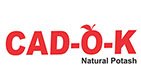

AmiCAD (Liquid)
Protein hydrolysate based formulation
General Information
AmiCAD- A Protein Hydrolysate based formulation is available in conc. upto 25 % protein content (existing branded formulation contains 15 %). AmiCAD is produced by the digestion of proteins in a form as needed and absorbed by the plants. AmiCAD possesses hormonal properties to boost plant growth as well as overall metabolic and physiological functioning of plants by improving soil micro-environment leading to enhanced productivity. The active nature of Amino Acids in AmiCAD formulations helps nutrients to get chelated and absorbed in the plant system. Minerals chelated with Amino Acids has enhanced absorption to the extent of 300 times. Further, foliar nutrition in the form of Protein, Hydrolysate provide readymade building blocks for Protein synthesis.
Active Ingredients
- Protein Hydrolysate : 15% w/w
Benefits of AmiCAD
- AmiCAD plays a very important role during seed germination by enriching endosperm which is the major source of seedling growth and development.
- Improves functional use efficiency of NPK fertilizers which reduces requirement and dependence on chemical fertilizers.
- Strengthens plant root system by providing extended arms to the roots, facilitating movement of roots to deeper and wider layers in the soil, leading to :
- - enhanced ability in plants to tolerate nutrient stress, drought and salinity.
- - increased resistance against soil born disease by restricting growth, development and movement of soil borne pathogens.
- - vigorous root system and increases phosphorous availability.
- AmiCAD helps to increase chlorophyll concentration in the plant leading to higher degree of photosynthesis.
- Improves yield and keeping quality of fruits, vegetables and other perennial crops leading to realization of higher market price and thereby increasing profitability.
- AmiCAD can be mixed with all types of fertilizers and manures and is non-toxic to plants, human and animals.
- AmiCAD is an environmentally safe product.
Recommended Dosage
- AmiCAD Liquid : 200 – 300 ml per acre as a foliar application, 2 to 3 times per growing season recommended for all crops and forages.
Method of Application
- AmiCAD Liquid for soil drenching : AmiCAD can be applied by different irrigation system such as flooding, by furrows, sprinkling and drip irrigation for stimulation of plant metabolism @ upto 1 litre per acre
- Foliar Spray : Apply AmiCAD @ 300 ml per Litre water and spray at every 30 days when needed to correct a deficiency.
- Seed Coating : Use 1 Litre AmiCAD to treat the Quantity of seeds for 1 Acre. For large seeds use more quantity.
Available Packing
- AmiCAD Liq. : 100ml, 250ml, 1000ml & Bulk
CAD-O-K
Natural potash 12%

General Information
Potash is necessary for overall plant health by enabling various plant processes such as photosynthesis, water movement (somatic function) and other enzymatic activity.
Active Ingredient
Potash as K2O
Benefits of CAD-O-K
- Helps smooth photosynthetic processes facilitating increased carbohydrate metabolism leading to breakdown and translocation of starches.
- Enhances plant’s ability to fight stress by increasing soils water holding as well as water use efficiency.
- Essential for formation of starch, protein and sugar which is important in better fruit formation, improved quality of seeds / fruit and longer harvesting periods.
- Activates various enzymatic processes and controls their reaction rates resulting in balanced nitrogen absorption and also mitigating side-effects of higher application of nitrogenous fertilizers.
- Helps combat winter hardiness, dry spells and imparts higher disease resistance.
- Facilitates growth of strong root system resulting in restricted crop damage during adverse climatic conditions.
- Imparts high sugar into plant’s fruits facilitating an increase in fruit weight, better & uniform fruit shape / size and enhanced lusture resulting in farmers getting higher market price for their output.
Recommended Dosage
Available Packing
- CAD-O-K : 1 kg, 2kg, 5 kg & 10kg Bag in powder form
Target Crops
All Crops
CAD-O-K Xtra
Natural potash enriched with Ca & MgO
General Information
Natural Soluble Potash formulated with Soil Conditioner in granular form for basal application. This is necessary for the plants overall health by enabling various metabolic processes such as photosynthesis, water movement (Somatic function) and enzyme activity. And also as a soil amendment, helps to maintain chemical balance in the soil, reduces soil salinity and improves water penetration.
Composition
| Parameters |
Requirements |
| Total Nitrogen (% Min.) |
1.5 |
| Phosphate as P2O2 (% Min.) |
0.4 |
| Soluble Potash as K2O ( % Min) |
12 |
| Natural Calcium as Ca (% Min.) |
7 |
| Natural Magnesium as MgO (% Min.) |
2 |
Benefits of CAD-O-K Xtra
- CAD-O-K Xtra improves Yield, quality, taste, shelf life and disease resistance, impart high sugar into plant’s fruits facilitating increase in fruit weight, better & uniform fruit shape / size and enhanced lusture resulting in farmers getting higher market price for their output
- Naturally available Calcium plays a critical metabolic role in carbohydrate removal and neutralize cell acids.
- Naturally available Magnesium helps smooth photosynthetic processes facilitating increased carbohydrate metabolism leading to break down and translocation of starches.
- Enhances plant’s ability to evade / fight stress by increasing soil’s water holding as well as water use efficiency.
- CAD-O-K Xtra is essential for formation of starch, protein and sugar which is important in better fruit formation, improved quality of seeds / fruit and longer harvesting periods.
- Activates various enzymatic processes and controls their reaction rates resulting in balanced nitrogen absorption and also mitigating side-effects of higher application of nitrogenous fertilizers.
- Helps combat winter hardiness, dry spells and imparts higher disease resistance.
- Facilitates growth of strong root system resulting in restricted crop damage during adverse climatic conditions.
Recommended Dosage
15 - 20 Kg / Acre
Available packing
- 5kg & 20 kg in granular form
Target
CAD-O-K Xtra is recommended to all cereals, ornamental vegetables and fruits, horticulture and cash crops. Very essential to Potato and sugarcane crops.
Mentor
Plant nutrient mobilizer & harvest quality improver
General Information
Mentor is first of its kind new generation technological formulation, which performs multiple functions of being Plant Nutrient Mobilizer and Harvest Quality Improver. Mentor is only product that caters to this segment which has been left untouched for decades. Mentor is botanical derived (100 Percent natural) and safe for all field and plantation crop species. It mobilizes, enhances uptake and use efficiency of all primary and secondary plant nutrients viz. Nitrogen, Phosphorus, Potash, Sulphur, etc.
Active Ingredients
- MSM-AA (Methylsulfonylmethane) : 26%
Mode of Action
Mentor is absorbed by plant surface very easily and quickly forms bond with all nutrients thereby facilitates the uptake of nutrients in their available forms like Nitrogen as Nitrate, Sulphur as Sulphate, etc. As a result of application of Mentor, the use efficiency of all major plant nutrients has been reported to increase upto 15-20 per cent.
Benefits of Mentor
- Mentor is present in ready to use form and can be absorbed by plant surface very easily and quickly.
- Stimulates plant growth by increased photosynthesis acting as catalyst in chlorophyll production
- Enhance the quality and durability of harvest by initiating production of compounds responsible for characteristics odour, flavour & colour of harvest in crops like onion, mustard, garlic, etc.
- Improves nutritional quality of harvest viz. higher protein percent due to higher and active conversion of inorganic N into protein in legumes / pulses, higher S for enhanced oil percent in oilseeds and carbohydrate in cereals.
- Promotes nodule formulation in legumes resulting in better nitrogen fixation and thus helps in improving soil fertility.
- Mentor has an excellent preventive efficacy against fungal pathogen and has multi-site contact and systematic action so no resistance problem.
- Mentor has a long persistence on crop surface and has low UV-photo degradation and low vapour pressure.
- Completely safe to vegetables, fruits, etc and is completely bio-degradable.
Recommended Dosage
- Mentor Liquid: 3-4 ml per litre of water as foliar application.
- Mentor Granule: 5-10 kg/acre at the time of fruit / seed development
Available Packing
- Mentor Liquid : 100ml, 250ml, 500ml, 1000ml & 5000ml
- Mentor Granule : 1kg, 5kg, 10kg, 25kg & 50kg
Target Crops
For all cereal crops, vegetables and all horticulture crops as a foliar spray.